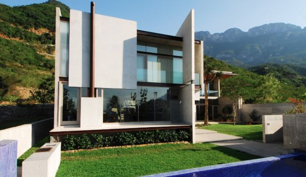

Contemporary home designs enjoyed their highest levels of popularity during the 1970s, but the style still retains its appeal today. Pure contemporary home plans display such eye-catching features as asymmetrical design, unusual angles, flat roofs with varied or multi-level rooflines,boldly articulated windows, silo-like towers, little ornamentation and vertical siding. Contemporary home design is, in fact, a post-modern interpretation of the modernist mindset, which pared buildings down to stark edifices with little warmth. Today's contemporary home plans include references to traditional architecture, albeit redefined and reinterpreted.
Features
Odd, irregular shapes
Little ornamentation
Oversized windows
Open floor plans